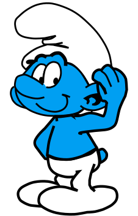

<h2 class="book-page-title" data-book-bind="unit.costaud.label"></h2>
<p>

Le Schtroumpf costaud porte ×<span data-book-ratio="unit.costaud.carryingCapacity" data-book-ratio-base="unit.default.carryingCapacity"></span> la charge d'un schtroumpf ordinaire. Son endurance vaut ×<span data-book-ratio="unit.costaud.stamina" data-book-ratio-base="unit.default.stamina"></span> la normale, son rendement ×<span data-book-ratio="unit.costaud.workPointsPerTurn.buildHouse" data-book-ratio-base="unit.default.workPointsPerTurn.buildHouse"></span> pour bâtir et ×<span data-book-ratio="unit.costaud.workPointsPerTurn.gatherMaterials" data-book-ratio-base="unit.default.workPointsPerTurn.gatherMaterials"></span> pour extraire des matériaux. Une telle vigueur lui ouvre l'appétit&nbsp;: il consomme ×<span data-book-ratio="unit.costaud.foodConsumptionPerTurn" data-book-ratio-base="unit.default.foodConsumptionPerTurn"></span> la ration ordinaire.
</p>
